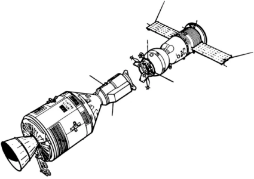

Spacecraft Docking
The Spacecraft Docking benchmark is a model of a docking spacecraft in 2D.

using ClosedLoopReachability
import OrdinaryDiffEq, Plots, DisplayAs
using ReachabilityBase.CurrentPath: @current_path
using ReachabilityBase.Timing: print_timed
using Plots: plot, plot!Model
There are 4 state variables $(s_x, s_y, \dot{s}_x, \dot{s}_y)$, where $(s_x, s_y)$ is the position and $(\dot{s}_x, \dot{s}_y)$ is the velocity of the spacecraft [RCM+22].
vars_idx = Dict(:states => 1:4, :controls => 5:6)
const m = 12.0
const n = 0.001027
const three_n² = 3 * n^2
const two_n = 2 * n
@taylorize function SpacecraftDocking!(dx, x, p, t)
s_x, s_y, s_x′, s_y′, F_x, F_y = x
dx[1] = s_x′
dx[2] = s_y′
dx[3] = three_n² * s_x + two_n * s_y′ + F_x / m
dx[4] = -two_n * s_x′ + F_y / m
dx[5] = zero(F_x)
dx[6] = zero(F_y)
return dx
end;We are given a neural-network controller with 4 hidden layers of 4, 256, 256, and 4 neurons, respectively, identity activations in the first and fourth hidden layer (which represent a pre- and postprocessing via linear maps), and tanh activations everywhere else. The controller has 4 inputs (the state variables) and 2 outputs ($F_x, F_y$).
path = @current_path("SpacecraftDocking", "SpacecraftDocking_controller.polar")
controller = read_POLAR(path);The control period is 1 time unit.
period = 1.0;Specification
We consider a smaller uncertain initial condition than originally proposed:
X₀ = Hyperrectangle(low=[70, 70, -0.14, -0.14], high=[106, 106, 0.14, 0.14])
U₀ = ZeroSet(2);The control problem is:
ivp = @ivp(x' = SpacecraftDocking!(x), dim: 6, x(0) ∈ X₀ × U₀)
prob = ControlledPlant(ivp, controller, vars_idx, period);The safety specification is given as follows:
\[‖\dot{s}_x^2 + \dot{s}_y^2‖ ≤ 0.2 + 2 n ‖s_x^2 + s_y^2‖\]
A sufficient condition for guaranteed verification is to overapproximate the result via interval arithmetic.
function predicate_point(v::Union{AbstractVector,IntervalBox})
x, y, x′, y′, F_x, F_y = v
lhs = sqrt(x′^2 + y′^2)
rhs = 0.2 + two_n * sqrt(x^2 + y^2)
return sup(lhs) <= inf(rhs)
end
function predicate_set(R)
return predicate_point(convert(IntervalBox, box_approximation(R)))
end
predicate(sol) = all(predicate_set(R) for F in sol for R in F)
T = 40.0
T_warmup = 2 * period; # shorter time horizon for warm-up runAnalysis
To enclose the continuous dynamics, we use a Taylor-model-based algorithm:
algorithm_plant = TMJets(abstol=5e-1, orderT=3, orderQ=1);To propagate sets through the neural network, we use the DeepZ algorithm:
algorithm_controller = DeepZ();The verification benchmark is given below:
function benchmark(; T=T, silent::Bool=false)
# Solve the controlled system:
silent || println("Flowpipe construction:")
res = @timed solve(prob; T=T, algorithm_controller=algorithm_controller,
algorithm_plant=algorithm_plant)
sol = res.value
silent || print_timed(res)
# Check the property:
silent || println("Property checking:")
res = @timed predicate(sol)
silent || print_timed(res)
if res.value
silent || println(" The property is satisfied.")
result = "verified"
else
silent || println(" The property may be violated.")
result = "not verified"
end
return sol, result
end;Run the verification benchmark and compute some simulations:
benchmark(T=T_warmup, silent=true) # warm-up
res = @timed benchmark(T=T) # benchmark
sol, result = res.value
@assert (result == "verified") "verification failed"
println("Total analysis time:")
print_timed(res)
println("Simulation:")
res = @timed simulate(prob; T=T, trajectories=1, include_vertices=true)
sim = res.value
print_timed(res);Flowpipe construction:
1.881969 seconds (2.62 M allocations: 405.978 MiB, 73.73% gc time)
Property checking:
0.032687 seconds (315.44 k allocations: 20.406 MiB)
The property is satisfied.
Total analysis time:
1.918129 seconds (2.94 M allocations: 427.136 MiB, 72.34% gc time, 0.00% compilation time)
Simulation:
0.958113 seconds (2.23 M allocations: 123.174 MiB, 0.00% compilation time)Results
Script to plot the results:
function plot_helper(vars)
fig = plot()
plot!(fig, sol; vars=vars, color=:yellow, lw=0, alpha=1, lab="")
if vars[1] == 0
initial_states_projected = cartesian_product(Singleton([0.0]), project(X₀, [vars[2]]))
plot!(fig, initial_states_projected; c=:cornflowerblue, alpha=1, lab="X₀",
m=:none, lw=3)
else
plot!(fig, project(X₀, vars); c=:cornflowerblue, alpha=1, lab="X₀")
end
plot_simulation!(fig, sim; vars=vars, color=:black, lab="")
return fig
end;Plot the results:
vars = (0, 1)
fig = plot_helper(vars)
plot!(fig; xlab="t", ylab="x₁")
# Plots.savefig(fig, "SpacecraftDocking.png") # command to save the plot to a file
fig = DisplayAs.Text(DisplayAs.PNG(fig))